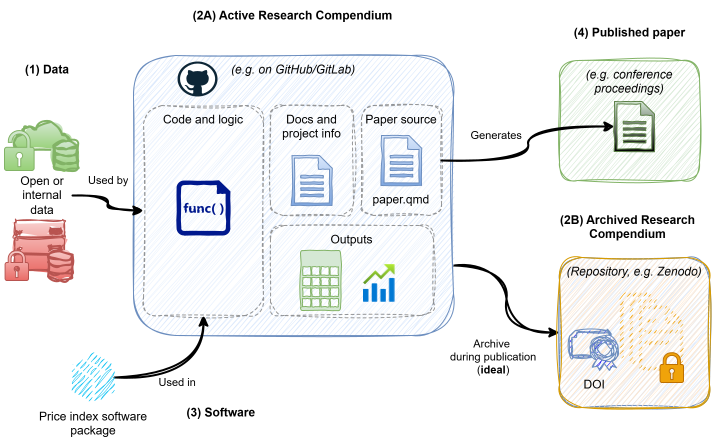
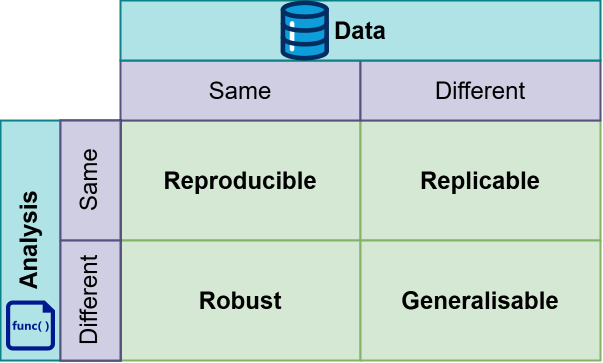
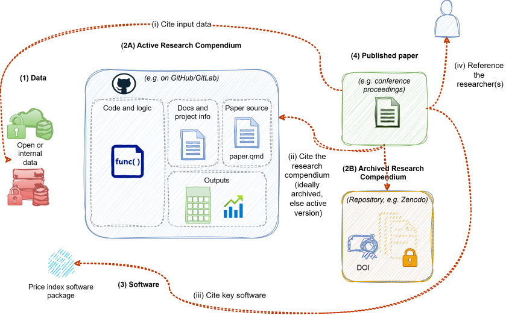
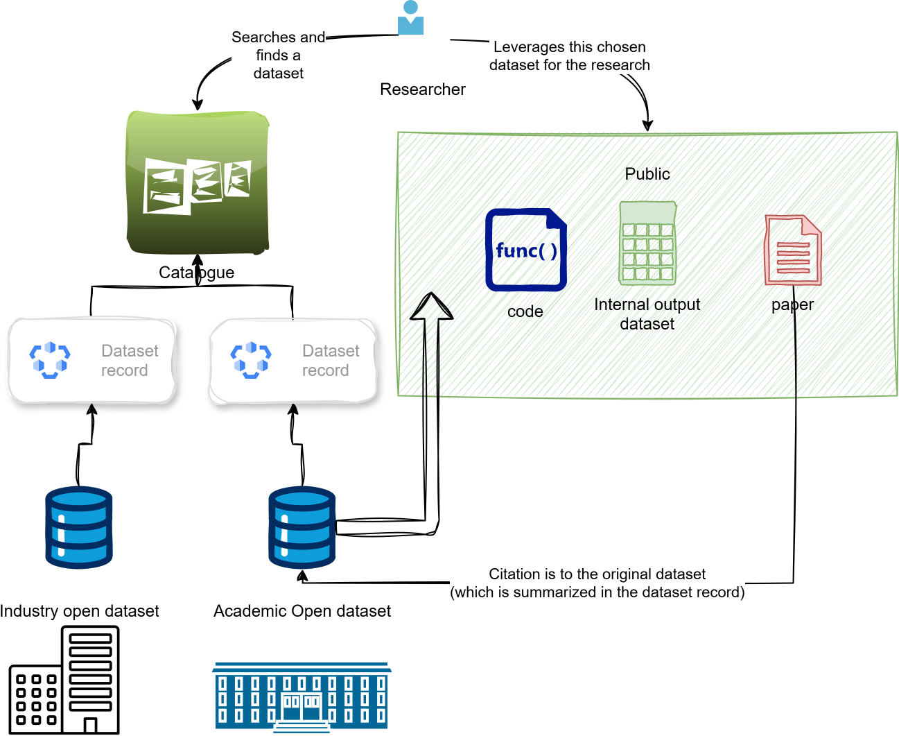

Main objects of the resarch

2026-05-14
Found a cool methodological paper with an empirical section? Cool, lets try to
understand it / learn from it by trying it
peer review it
evaluate it on your own data and maybe use it in production
extend it, there is a cool change that may make it better
Can we do any of the above right now in price statistics?
Ioannidis (2005) and Baker (2016) put the replication crisis on the map.
Ever since then, there have been a set of notable movements that have sought to help solve this problem.
For example:
FAIR - Findable, Accessible, Interoperable, Reusable - a set of principles for open science
Turing way - a set of guides and processes to follow that
We can adopt a set of practices to improve replicability (and ideally reproducibility) in Price Statistics.
We can move from a “trust me, it works on my data” toward “here is exactly how I did what I did, and here is everything you need to check my work.”
We’ve already started! The Reproducible Analytical Pipelines (RAP) framework is increasingly adopted in official statistics.
We can apply it to research, and also bring in good practices from others!
The FAIR/Reproducibility workstream on the UN Task Team has worked to support our discipline.
There are two main problems:
With what data? We typically use internal data as its already processed, classified, and ready. Good open datasets are few and far between.
How to do it? What works for our discipline and how to start in a gradual manner? The skills needed aren’t obvious at first and the path is steep
We solve both by:
Deveoping and supporting a curated catalog of open data. Use this to find datasets that apply to your project.
Providing guidance on practices that apply to our discipline.
In the following slides, we’ll showcase the key ideas!





Great!
Goussev, S., Martin, S., Lamboray, C., Bontemps, C., Flower, T., Hillman, B., White, C., & Mehroff, J. (2026). Price Statistics Reproducibility Project (v0.1). Zenodo. https://doi.org/10.5281/zenodo.19779579
Tell us what we’re missing? What would make it easy for you develop your project in a reproducible way?
should we do a survey?